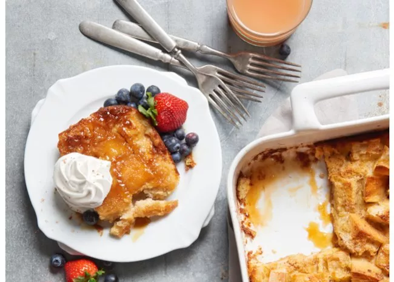

Easy French Toast Casserole

This French toast casserole combines all the ingredients of traditional French toast in an easy overnight method.
No more slaving over a hot stove flipping pieces of French toast while your guests are waiting. Make this easy casserole the night before, pop it in the oven in the morning, and serve it for a casual weekend or holiday breakfast.
You can add additional ingredients such as blueberries and cream cheese, cinnamon apples, nuts, and dried fruit!
Ingredients:
- brown sugar
- butter
- bread
- eggs
- milk
- vanilla
- cinnamon
Steps:
- Cook the butter with a cup of brown sugar until the butter is melted and the sugar is dissolved, then pour the mixture into a prepared baking dish. Scatter the bread pieces over the butter mixture. Mix the milk, vanilla, and eggs together, then pour over the bread.
- Cover the casserole and transfer to the fridge. Refrigerate at least 8 hours or up to overnight.
- Remove the casserole from the fridge and uncover. Sprinkle with a mixture of brown sugar-cinnamon, then bake in the preheated oven until the casserole is browned and bubbling.